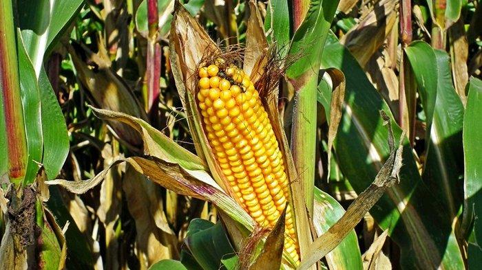

Bryophyta(lumut)

Angiospermae memiliki struktur reproduksi yang disebut bunga. Bunga terdiri dari bagian-bagian seperti kelopak, mahkota, benang sari, dan putik yang berperan dalam pembuahan dan pembentukan buah.
Bijinya dilindungi oleh buah, yang merupakan struktur berkembang dari ovarium bunga setelah proses pembuahan. Buah melindungi biji dan berkontribusi pada dispersi biji.
Angiospermae memiliki sistem pembuluh vaskular yang sangat berkembang, termasuk xilem dan floem, yang berfungsi untuk mengangkut air, nutrisi, dan hasil fotosintesis ke seluruh tumbuhan.
Angiospermae mendominasi flora darat dan menjadi kelompok tumbuhan yang paling beragam dan sukses secara evolusioner.
Siklus hidup angiospermae melibatkan pergiliran antara generasi sporofit (generasi yang lebih besar) dan generasi gametofit (generasi yang lebih kecil).
Banyak angiospermae melibatkan polinasi yang dibantu oleh serangga, angin, atau hewan lain untuk mentransfer serbuk sari ke putik.